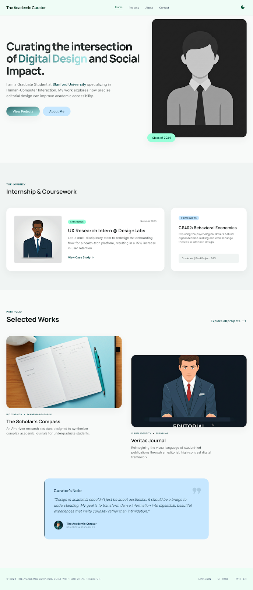

Auto-Curator Active
Select Your Canvas
Our system has analyzed your creative profile. These layouts are engineered to amplify your specific aesthetic signature.
search

Bold Creative
Expressive visual storytelling with strong imagery.

High Contrast 1 page
Minimal, dramatic contrast for focused storytelling.

Minimalist Architect
Whitespace-led structure with refined hierarchy.

Playful 1 page
Playful single-page layouts with a lively rhythm.

Professional Developer
Structured pages for technical portfolios.

Student
Academic work presented with editorial clarity.

Tech 1 page
Concise layouts for products and tools.